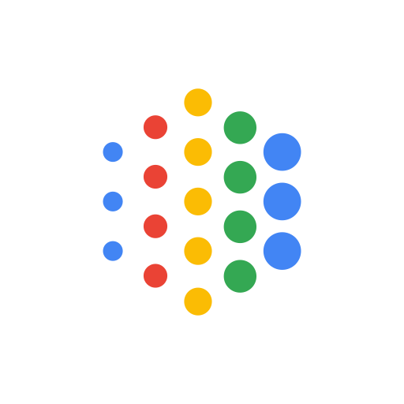
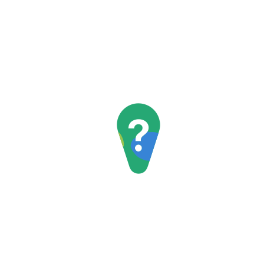
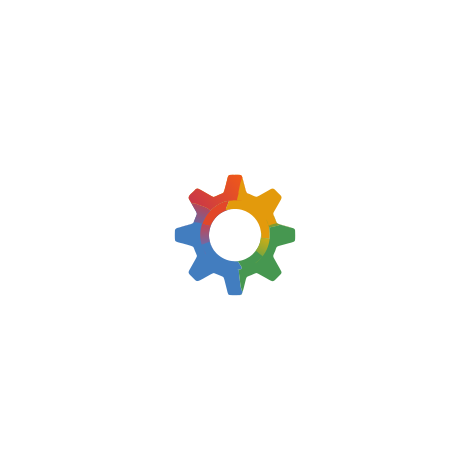

Traducteur & Dictée Vocale IA universelle pour jeux vidéo et applications Windows.

100% gratuit, sans carte bancaire requise et opérationnel en moins d'une minute.
Cliquez sur le bouton bleu "Create API Key" puis sélectionnez "Create API key in new project".
Copiez la clé obtenue (débutant par AIzaSy...) pour l'insérer dans l'application ou votre fichier .env.
Google met à disposition plusieurs modèles pour l'analyse et la traduction vocale. Voici les limites officielles du palier gratuit (Free Tier) :
| Modèle IA | Req / Minute (RPM) | Req / Jour (RPD) | Recommandation |
|---|---|---|---|
| gemini-3.5-flash-lite Par défaut | 15 RPM |
500 RPD |
Idéal pour les sessions de jeu prolongées. Réponses instantanées et fidélité audio optimale. |
| gemini-3.1-flash-lite | 15 RPM |
500 RPD |
Alternative économique, ultra-rapide avec une faible empreinte de calcul. |
| gemma-4-26b | 30 RPM |
14 400 RPD |
Usage intensif et flux continu pour de très gros volumes de dictée. |
gemini-3.5-flash-lite est sélectionné par défaut ?
Cliquez dans n'importe quel champ de saisie (chat du jeu Forza, Discord, WhatsApp, navigateur, document Word...). Grâce au Focus Check, l'enregistrement ne démarre que si un champ actif est détecté.
Pressez votre raccourci (par défaut F8 au clavier ou RS / R3 sur manette). Le son Windows est automatiquement atténué (Audio Ducking) pour garantir une écoute limpide.
Relâchez le raccourci : l'IA identifie votre langue parlée, la traduit vers la langue cible configurée, la colle directement au curseur (Ctrl+V) et valide avec Entrée.